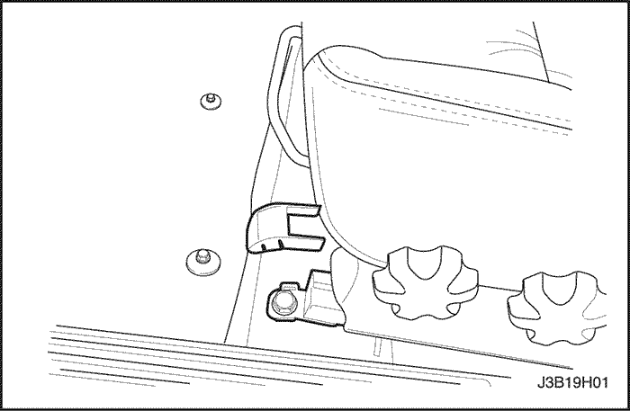
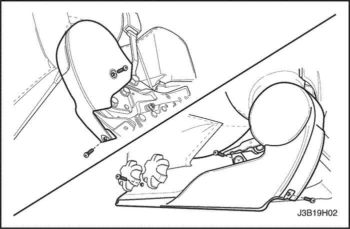
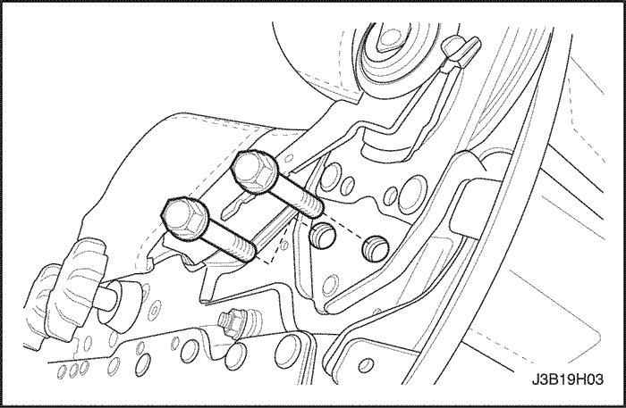
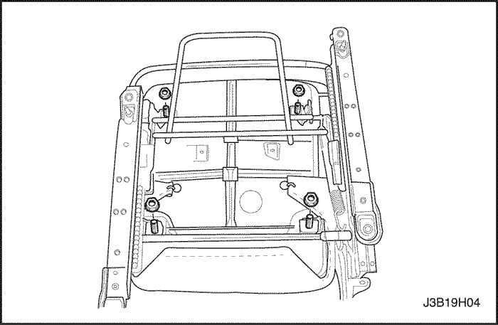
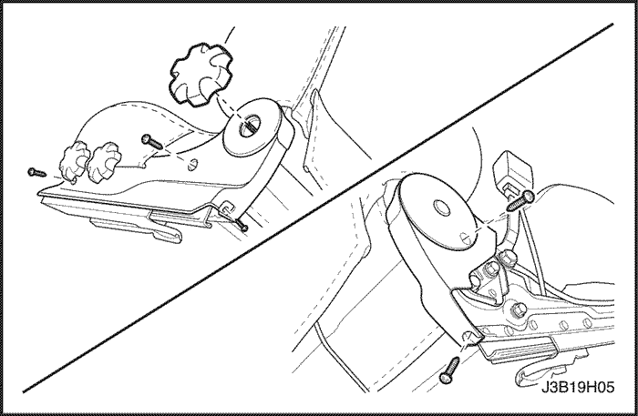
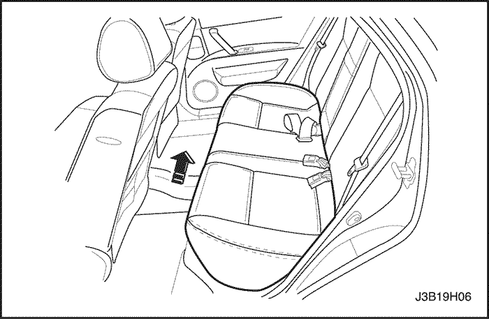
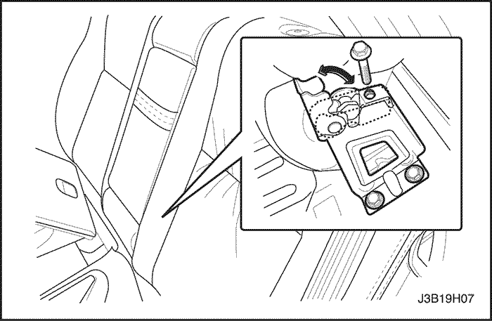
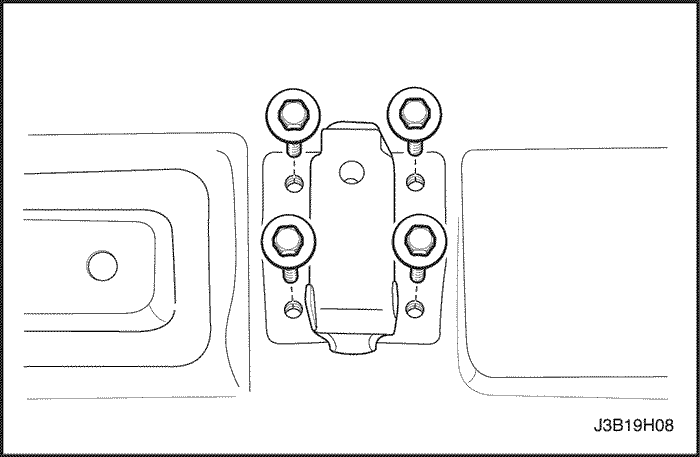
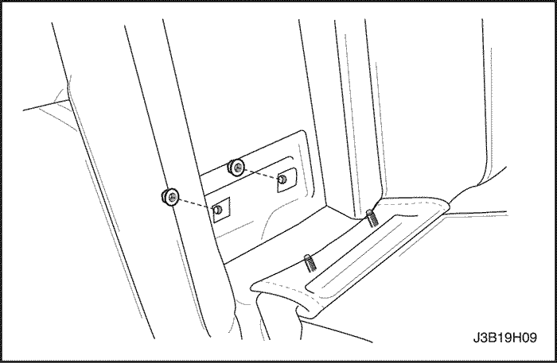
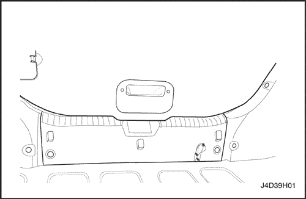

SECCIÓN 9H
ASIENTOS
Precaución: Desconecte el cable negativo de la batería antes de quitar o instalar cualquier equipo eléctrico o siempre que algún equipo o herramienta pueda entrar en contacto con las terminales eléctricas expuestas. Al desconectar este cable, ayudará a evitar lesiones personales y daños al vehículo. El encendido también debe estar en la posición LOCK (bloqueado), a menos que se indique lo contrario.
ESPECIFICACIONES
Especificaciones de apriete
| Aplicación | N•m | Lb-Ft | Lb-pulgada |
| Tuercas del apoyabrazos | 24 | 18 | - |
| Tornillos del respaldo de asiento delantero | 45 | 33 | - |
| Tornillos de cubierta de asiento delantero | 12 | - | 106 |
| Tornillos de cojín de asiento delantero | 12 | - | 106 |
| Tornillos de guarnecido de asiento delantero | 12 | - | 106 |
| Tornillos de asiento delantero a piso | 25 | 18 | - |
| Tornillos del respaldo de asiento trasero | 25 | 18 | - |
| Tornillos de bisagra de asiento trasero | 45 | 33 | - |
| Tornillo de palanca de inclinación de asiento | 12 | - | 106 |
| Tornillos del conjunto de deslizador | 25 | 18 | - |
| Tornillos del conjunto de deslizador | 10 | - | 89 |
MANTENIMIENTO Y REPARACIÓN
servicio con vehículo en marcha


Asiento bajo delantero
Procedimiento de desmontaje
- Desconecte el cable negativo de la batería.
- Quite los tapones plásticos y los tornillos que fijan la porción trasera del asiento delantero al piso.

- Quite los tapones plásticos y los tornillos que fijan la porción delantera del asiento delantero al piso.
- Desenchufe los conectores eléctricos.
- Quite el asiento.
Procedimiento de Instalación
- Instale el asiento.
- Enchufe los conectores eléctricos.
Aviso: Los metales diferentes que están en contacto entre sí, son rápidamente afectados por la corrosión. Asegúrese de utilizar los elementos de fijación adecuados para evitar corrosión prematura.
- Instale los tornillos en la porción delantera del asiento delantero.
Apretar
Apriete los tornillos del asiento delantero al piso con 25 N• (18 lb-ft).
- Instale los tapones plásticos.
- Instale los tornillos en la porción trasera del asiento delantero.
Apretar
Apriete los tornillos del asiento delantero al piso con 25 N• (18 lb-ft).
- Instale los tapones plásticos.
- Conecte el cable negativo de la batería.

Respaldo de asiento delantero
Procedimiento de desmontaje
- Quite el asiento bajo delantero del vehículo. consulte "Asientos bajos delanteros" en esta sección.
- Quite guarnecido de cada asiento.

- Desenchufe los conectores eléctricos.
- Quite los tornillos y el respaldo de asiento.
Procedimiento de Instalación
- Instale el respaldo de asiento sobre el cojín de asiento.
Aviso: Los metales diferentes que están en contacto entre sí, son rápidamente afectados por la corrosión. Asegúrese de utilizar los elementos de fijación adecuados para evitar corrosión prematura.
- Instale los tornillos del respaldo de asiento delantero.
Apretar
Apriete los tornillos del respaldo de asiento con 45 N•m (33 lb-ft).
- Enchufe los conectores eléctricos.
- Instale los guarnecidos de asiento en su posición original.
- Instale el asiento bajo delantero en el vehículo. consulte "Asientos bajos delanteros" en esta sección.

Cojín de asiento delantero
Procedimiento de desmontaje
- Quite el asiento delantero del vehículo. consulte "Asientos bajos delanteros" en esta sección.
- Quite los guarnecidos de asiento.
- Quite las tuercas del cojín de asiento.
- Quite el cojín del riel de asiento.
Procedimiento de Instalación
- Instale el cojín en el riel de asiento.
Aviso: Los metales diferentes que están en contacto entre sí, son rápidamente afectados por la corrosión. Asegúrese de utilizar los elementos de fijación adecuados para evitar corrosión prematura.
- Instale el cojín de asiento con las tuercas.
Apretar
Apriete las tuercas del cojín de asiento delantero con 12 N•m (106 lb-in).
- Instale los guarnecidos de asiento.
- Instale el asiento delantero en el vehículo. consulte "Asientos bajos delanteros" en esta sección.

Nivelador del apoyo lumbar
Procedimiento de desmontaje
- Quite el nivelador del apoyo lumbar.
Procedimiento de Instalación
Aviso: Los metales diferentes que están en contacto entre sí, son rápidamente afectados por la corrosión. Asegúrese de utilizar los elementos de fijación adecuados para evitar corrosión prematura.
- Instale el nivelador del apoyo lumbar.

Pomos de ajuste de altura
Procedimiento de desmontaje
- Quite la perilla de ajuste de altura.
Procedimiento de Instalación
Aviso: Los metales diferentes que están en contacto entre sí, son rápidamente afectados por la corrosión. Asegúrese de utilizar los elementos de fijación adecuados para evitar corrosión prematura.
- Instale la perilla de ajuste de altura.

Guarnecido de asiento delantero
Procedimiento de desmontaje
- Quite el asiento bajo delantero del vehículo. consulte "Asientos bajos delanteros" en esta sección.
- Quite los tornillos y el guarnecido de asiento delantero.
Procedimiento de Instalación
Aviso: Los metales diferentes que están en contacto entre sí, son rápidamente afectados por la corrosión. Asegúrese de utilizar los elementos de fijación adecuados para evitar corrosión prematura.
- Instale el guarnecido de asiento delantero con los tornillos.
Apretar
Apriete los tornillos del guarnecido de asiento delantero con 12 N•m (106 lb-in).
- Instale el asiento bajo delantero en el vehículo. consulte "Asientos bajos delanteros" en esta sección.

Apoyacabeza
Procedimiento de desmontaje
- Oprima el botón de ajuste de la retención de cabeza y quite la retención de cabeza del respaldo de asiento.

- Inserte dos destornilladores de punta plana por la parte delantera y la trasera de las mangas de guía.
- Oprima los retenes con los destornilladores y quite las mangas de guía.

Procedimiento de Instalación
- Instale las mangas de guía en el respaldo de asiento y presiónelas hacia abajo para engancharlas en los retenes.
- Instale la retención de cabeza en las mangas de guía.

Cojín del asiento trasero
Procedimiento de desmontaje
- Quite el cojín de asiento trasero del piso; para ello, levántelo de los soportes de retención y deslícelo hacia delante.
Procedimiento de Instalación
- Instale el cojín de asiento insertando los bucles metálicos en los soportes de retención traseros, y presionando hacia abajo el frente del cojín de asiento.

Respaldo de asiento trasero separado
Procedimiento de desmontaje
- Baje los respaldos de asiento trasero.
- Quite los tornillos, y luego el respaldo de asiento de las bisagras.
Procedimiento de Instalación
Aviso: Los metales diferentes que están en contacto entre sí, son rápidamente afectados por la corrosión. Asegúrese de utilizar los elementos de fijación adecuados para evitar corrosión prematura.
- Instale el respaldo de asiento en las bisagras con los tornillos.
Apretar
Apriete los tornillos del respaldo de asiento trasero con 25 N•m (18 lb-ft).
- Levante los asientos traseros posteriores y fíjelos en posición vertical.

Articulación de respaldo de asiento trasero separado
Procedimiento de desmontaje
- Quite el respaldo de asiento trasero y el cojín de asiento trasero. Consulte "Respaldo de asiento trasero separado" y "Cojín del asiento trasero" en esta sección.
- Quite los tornillos y la bisagra central del respaldo de asiento.
Procedimiento de Instalación
Aviso: Los metales diferentes que están en contacto entre sí, son rápidamente afectados por la corrosión. Asegúrese de utilizar los elementos de fijación adecuados para evitar corrosión prematura.
- Instale la bisagra central del respaldo de asiento con los tornillos.
Apretar
Apriete los tornillos de bisagra del asiento trasero con 45 N•m (33 lb-ft).
- Instale el respaldo de asiento trasero y el cojín del asiento trasero. Consulte "Respaldo de asiento trasero separado" y "Cojín del asiento trasero" en esta sección.

Apoyabrazos central del asiento trasero
Procedimiento de desmontaje
- Baje los respaldos de asiento trasero.
- Quite las tuercas y el apoyabrazos.
Procedimiento de Instalación
Aviso: Los metales diferentes que están en contacto entre sí, son rápidamente afectados por la corrosión. Asegúrese de utilizar los elementos de fijación adecuados para evitar corrosión prematura.
- Instale el apoyabrazos con las tuercas.
Apretar
Apriete las tuercas del apoyabrazos con 24 N•m (18 lb-ft).
- Levante los asientos traseros posteriores y fíjelos en posición vertical.

Fundas de asientos
Procedimiento de desmontaje
- Quite el respaldo de asiento y/o el cojín. Consulte "Respaldo de asiento delantero", "Cojín de asiento delantero", "Respaldo de asiento trasero separado", y/o "Cojín del asiento trasero" en esta sección.
- Quite los anillos de alambre del respaldo de asiento y/o del cojín.
- Quite la funda de asiento del respaldo de asiento y/o del cojín.
Procedimiento de Instalación
- Ponga la funda de asiento en el respaldo de asiento y/o el cojín con nuevos anillos de alambre.
- Instale el respaldo de asiento y/o el cojín de asiento. Consulte "Respaldo de asiento delantero", "Cojín de asiento delantero", "Respaldo de asiento trasero separado", y/o "Cojín del asiento trasero" en esta sección.

Anclaje del asiento de seguridad infantil
Procedimiento de desmontaje
- Quite la cubierta del anclaje del asiento de seguridad infantil.
- Quite el perno y el anclaje del asiento de seguridad infantil.
- Quite el perno y el anclaje del asiento de seguridad infantil.
Procedimiento de Instalación
- Instale el anclaje del asiento de seguridad infantil con el perno.
Apretar
Apriete el perno del anclaje del asiento de seguridad infantil con 10 N•m (89 lb-in).
- Instale la cubierta del anclaje del asiento de seguridad infantil.

Anclaje del asiento de seguridad infantil
Procedimiento de desmontaje
- Quite la cubierta del anclaje del asiento de seguridad infantil.
- Quite el perno y el anclaje del asiento de seguridad infantil.
- Quite el perno y el anclaje del asiento de seguridad infantil.
Procedimiento de Instalación
- Instale el anclaje del asiento de seguridad infantil con el perno.
Apretar
Apriete el perno del anclaje del asiento de seguridad infantil con 10 N•m (89 lb-in).
- Instale la cubierta del anclaje del asiento de seguridad infantil.
DESCRIPCIÓN GENERAL Y FUNCIONAMIENTO DEL SISTEMA
Asientos
No intente modificar la posición de diseño del asiento modificando la disposición de los anclajes del regulador de asiento al piso, o la disposición del anclaje del regulador de asiento al bastidor de asiento. Cambiar la posición del asiento podría afectar el desempeño del sistema de asiento.
Este vehículo está equipado con asientos bajos delanteros con retenciones de cabeza separadas y ajustables, y un asiento de banco trasero para tres pasajeros con un asiento trasero plegable opcional. Los asientos separados delanteros tienen ajuste de inclinación, altura y lumbar. Se puede encargar, como opción, un asiento de conductor motorizado. Los cojines de asiento y los respaldos de asiento tienen piezas de espuma moldeadas, que se ajustan a toda la forma del conjunto de bastidor de respaldo de asiento y al contorno de diseño del bastidor de cojín de asiento.